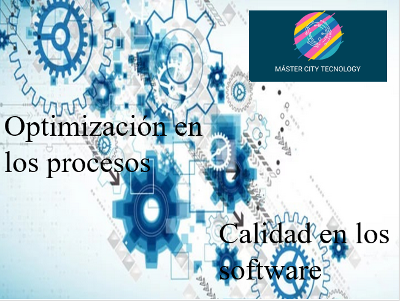
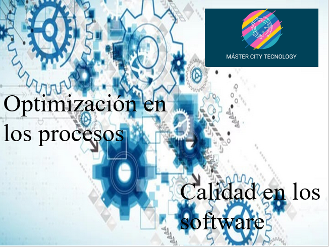

Acerca de Nosotros
¿Cómo se puede optimizar los procesos de producción, venta y desarrollo por medio de un software (Aplicación y/o Pagina Web)?
Master City Tecnology se concibe como una empresa que ofrece software como servicio a diferentes sectores del mercado. Se manejarán las siguientes líneas estratégicas: 1.Desarrollo a la medida (Aplicaciones Móviles, Paginas Web). 2.Optimización de los procesos. 3.Marketing y publicidad.
 


Misión
Ofrecer software de calidad en diferentes plataformas digitales (Internet, Dispositivos móviles), reconocida por su excelente atención rápida y oportuna en la solución.
Visión
Para el 2022 ser una empresa que ofrezca software a la media, que ayuden a nuestros clientes a solucionar sus problemas con agilidad, proporcionando un valor añadido a través de altos conocimientos técnicos.
Ayudar a nuestros clientes a incrementar su productividad, a disminuir sus pérdidas por fallas de equipos, creando software de forma sostenible, promoviendo la mejora continua, apoyar a nuestra sociedad a través de la capacitación y dando oportunidades de empleo a personas con talento.